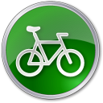

Dia Mundia de la Bicicleta
Banner conmemorativo

Existe la creencia de que Leonardo Da Vinci creó el primer boceto en papel de una bicicleta.En 1816, Karl Dreis, inventor y aristócrata alemán creó lo que sería el primer vehículo dirigible con dos ruedas en linea.En 1839 el herrero escocés Kirkpatrick Macmillan añadió pedales con barras a un prototipo.En 1873 James Starley, un inventor inglés, produjo la primera máquina con casi todas las características de la famosa bicicleta de rueda alta.En 1885, John Kemp Starley crea la “bicicleta de seguridad”.

Hoy en día el uso de la bicicleta va más allá del deporte o de la diversión. Ante lo caótico que se ha convertido transitar por la Ciudad de México, cada vez son más las personas que la utilizan como medio de transporte. Se estima que alrededor del 5 por ciento de la población en la capital ocupa la bicicleta para llegar a la escuela o al trabajo, lo que agiliza su tiempo de traslado, pero sobre todo ayuda a darle un respiro al medio ambiente. Una ciudad con alta circulación de bicicletas por sus calles es, definitivamente, una ciudad amigable con el medio ambiente, pues lo ayuda a reducir los niveles de contaminación ambiental y sus niveles de monóxido y dióxido de carbono, hidrocarburos y otras partículas que favorecen la contaminación del aire.
Las bicicletas de montaña (también conocidas como MTB) están diseñadas para “fuera de ruta” por lo que son bastante resistentes. Están equipadas con llantas anchas con dibujos marcados para mejorar el agarre en terrenos sueltos. Regularmente usan manubrios rectos o de doble altura.
Son bicicletas orientadas a obtener velocidad en pavimento, de construcción más ligera que otras bicicleta, están dotadas con ruedas más grandes, delgadas y provistas de llantas angostas y con dibujo liso. Las bicis de ruta utilizan manubrios drop-bar para lograr una postura más aerodinámica.
Las bicicletas híbridas son bastante versátiles ya que combinan características de las bicis de montaña y de las de ruta.Estas bicicletas nacieron como una solución para quienes necesitan una bicicleta para la ciudad, pero que tenga la flexibilidad de ser usada en diferentes terrenos. Los cuadros son resistentes y con una geometría que permite adoptar una posición cómoda que permite relajar los brazos y el cuello.
En este caso nos referimos como bicicleta urbana a las bicis estilo holandés (Dutch). Estas bicicletas fueron concebidas para la ciudad, por lo que son de construcción bastante solida tanto en su cuadro como en sus ruedas. Están perfectamente adecuadas para soportar las condiciones de una ciudad (baches, banquetas, topes, etc.)
La gran mayoría de estas bicicletas usan ruedas pequeñas, siendo 16 y 20″ las más comunes, aunque es posible encontrar plegables con rodados más convencionales. Casi todas las plegables están diseñadas para uso urbano, no obstante existen modelos que aguantan viajes largos sin problemas. Un inconveniente de de las ruedas pequeñas es que son más sensibles a las imperfecciones del camino, aunque si lo que necesitas es una bici que puedes llevar contigo en todo momento no hay como una plegable.
Si bien su conceptp es el de ser una bicicleta sencilla, se han convertido en algo así como las bicicletas de culto para el ciclismo urbano. Su principal característica es su diseño simple y en muchos casos minimalista, sumamente eficientes y funcionales. Esta familia de bicis viene en varias formas y estilos; las hay con manubrios rectos, de doble altura, drop bars, bullhorns, etc.
Este tipo de bicicletas están diseñadas para trayectos cortos y sobre pavimento preferencialmente. Su geometría y manubrio característico permiten una postura sumamente relajada. Estas bicicletas suelen ser pesadas y usan llantas anchas lo que las hace poco eficientes en trayectos de más de 10km. Normalmente tienen una sola velocidad aunque algunos fabricantes tienen modelos con tres velocidades. Otra característica común en las cruiser son los frenos de contrapedal.
Las BMX utilizan cuadros pequeños y resistentes, ideales para saltos y acrobacias. Existen diferentes variables de estas bicicletas, algunas con llantas anchas para usarse en terrenos sueltos y otras con llantas un poco más delgadas y lisas para usarse en rampas o en la calle. Estas bicicletas no son eficientes como medio de transporte.
Specialized Bicycle Components es un fabricante de bicicletas y componentes de ciclismo estadounidense, situado en la ciudad de Morgan Hill, California. Hoy en día mantiene talla Internacional, con distribuidoras en casi todo el mundo.En la actualidad, la marca maneja estilos varios de bicicletas, de experiencias y precios muy diferentes, desde los básicos modelos Hardrock, pasando por modelos como Epic, Enduro, Camber y la siempre presente Stumpjumper.
Trek Bicycle Corporation es un fabricante de bicicletas y de accesorios y componentes de ciclismo estadounidense, que distribuye bajo las marcas Trek, Gary Fisher, Bontrager, Klein y, anteriormente, también Lemond Racing Cycles. Con sede principal en Waterloo (Wisconsin), las bicicletas Trek son comercializadas a través de 1.700 comerciales en Norteamérica, subsidiarias en Europa y Asia y distribuidores en 90 países del mundo.
Giant Manufacturing Co. Ltd. (comúnmente conocido como Giant ) es un fabricante taiwanés de bicicletas reconocido como el fabricante de bicicletas más grande del mundo. [1] Giant tiene instalaciones de fabricación en Taiwán , los Países Bajos y China.
Canyon Bicycles GmbH (abr.: Canyon) es un fabricante de bicicletas de carreras, de montaña y de triatlón alemán situado en Coblenza, Alemania. La marca no sólo es compatible con los triatletas y ciclistas de carreras, sino también los ciclistas de montaña. Los primeros contratados para Canyon fueron Bobby Root y Stefan Herrmann, así como los hermanos Fumic en 2006. La empresa fue así representada por corredores profesionales en todas las facetas del deporte en bicicleta de montaña. En la actualidad hay también otros ciclistas en el equipo como Robert Jauch, alias Rob-J y Tibor Simai.
El Día Mundial de la Bicicleta se celebra cada 19 de abril para promover el uso de este transporte, intentar mejorar los derechos de los ciclistas y destacar los beneficios para la salud y el medio ambiente que supone la utilización de la bici. Se conmemora este día debido a un acontecimiento que tuvo lugar el 19 de abril de 1943. Albert Hofmann fue un químico suizo mundialmente famoso por estar considerado como el "padre del LSD". Él mismo sintetizó, ingirió voluntariamente y experimentó los efectos de la dietilamida de ácido lisérgico - tomó 0,25 miligramos- mientras volvía a casa dando un paseo en bicicleta junto a su asistente, viviendo una de las anécdotas más destacadas de la historia. Tres días antes, el 16 de abril, habría descubierto sus efectos al absorber de forma inconsciente varias gotas de esta sustancia mientras trabajaba con ella en su laboratorio.El Día de la Bicicleta se celebró por primera vez en 1985 gracias a la iniciativa de Thomas B. Roberts, un profesor de la Universidad del Norte de Illinois. Esta conmemoración, que tuvo lugar en su casa de DeKalb, años después comenzó a expandirse por el resto de países.


 1
1 2
2 3
3 4
4 5
5 6
6 7
7 8
8